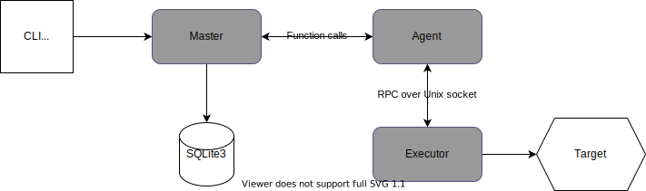
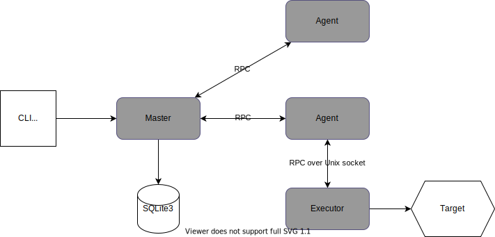

class: middle # Gobench Load Testing Tool ## Nguyễn Quốc Đính ### Grokking Checkpoint, 17/10/2020 --- ## Features 1. Expressive: Complex scenario, not just a simple HTTP endpoint 2. Protocol diversification: MQTT, NATS, and more 3. Intuitive: Realtime graph 4. Scalable: One million concurrent connection (TBA) https://github.com/gobench-io/gobench --- ## Expressive: No DSL, only Go yo! ```go package main import "github.com/gobench-io/gobench/scenario" func export() scenario.Vus { // required return scenario.Vus{ scenario.Vu{ // a virtual user class Nu: 1000, // number of virtual users Rate: 200, // startup rate (Poisson dist) Fu: f1, // user ref function }, scenario.Vu{ Nu: 3000, Rate: 200, Fu: f2, }, } } ``` --- class: middle ```go func f1(ctx context.Context, vui int) { for { log.Println("tic") time.Sleep(1 * time.Second) } } func f2(ctx context.Context, vui int) { // ... } ``` --- ## How does Gobench work, then? <img src="./gobench-model.svg" alt="gobench model" style="width: 100%;"/> --- ## Terminology - Master Master is one single server - Coordinate jobs - Manage the network of Agents - Collect metrics information from Agents - Store results, handle web API requests - SPOF ```shell $ gobench --mode master --cluster-port 6890 --port 8080 ``` --- ## Terminology - Master Agents run on any (Unix) machine - Receive jobs from Master - Run the job by executing Executor - Manage data generated by Executor - Periodically send resource usage updates and job metrics to Master. ```shell $ gobench --mode agent --cluster-port 6890 --route master:6890 ``` --- ## Terminology - Executor Executor is started by Agent - When running the job, Agent has only one Executor - Aggregate metrics information (gauge, counter, histogram) before report to Agent ```shell $ executor --agent-soc gobench-agentsocket-14259 --executor-soc executorsock-12 ``` --- ## Local mode Gobench can run in a (default) local mode which Master has just one local Agent ```shell $ curl -X POST -H 'Content-Type: application/json' --data '{ "name":"cool bench", "scenario":"base64 encode scenario file", "gomod":"base64 encode go.mod file", * "mode": "local" }' http://endpoint/api/applications ```  --- ## Distributed mode (Work In Process) ```shell $ curl -X POST -H 'Content-Type: application/json' --data '{ "name":"cool bench", "scenario":"base64 encode scenario file", "gomod":"base64 encode go.mod file", * "mode": "cloud", * "node": 7 }' http://endpoint/api/applications ```  --- ## Create new client Example: https://github.com/gobench-io/gobench/tree/master/clients Call 2 APIs ```go import ( "github.com/gobench-io/gobench/executor" ) executor.Setup(groups) executor.Notify(metric-id, value) ``` --- ## Metric collection 1. Aggregate metrics at Agent. Send the result over the Master 2. Send the raw metrics to master or centralize DB (1) is simple; but lost the ability to merge histogram metrics. (2) is expensive. Gobench is using (1) --- ## Gobench is having - Single model - Support HTTP, MQTT, NATS -- ## WIP - Distributed model - More client types (RPC, WS, graphQL) - Benchmark the benchmark https://k6.io/blog/comparing-best-open-source-load-testing-tools#max-traffic-generation-capability - Docs -- ## May never - Different DB driver layer to save raw metrics --- class: middle # Gobench is my first serious Golang project. Some learned lessons --- ## Lesson 1: Go plugin is so fragile -- First attempt for scenario is Go plugin ```shell go build -buildmode=plugin -o scenario.so scenario.go ``` -- Error when build with different version or build from different path ```shell panic: plugin.Open("plugin"): plugin was built with a different version of package ``` Still an opened issue https://github.com/golang/go/issues/27751 --- ## Lesson 2: User program must be run at different kernel process -- Can we reliability force to kill a child goroutine? -- No. Phantom routines. ```go func f1(ctx context.Context, vui int) { go foo() for { select { case <-ctx.Done(): return } } } ``` --- ## Lesson 3: User program must be run at different kernel process Can we recover from a panic? -- Not always. ```go func f1(ctx context.Context, vui int) { defer func() { if r := recover(); r != nil { // ... } }() go func() { panic("Panicking") } for { select { case <-ctx.Done(): return } } } ``` --- ## Move from Go plugin User scenario + go template => Executor binary ```go out, err := exec. Command( "sh", "-c", fmt.Sprintf("cd %s; go build -o %s", dir, binaryPath), ). CombinedOutput() ``` --- ## Agent and Executor Communicate via grpc over unix socket ```go cmd := exec.CommandContext(ctx, executorPath, "--agent-sock", agentSock, "--executor-sock", executorSock) ``` -- <img src="./gobench-agent-executor.svg" alt="gobench model" class="center" style="width: 60%;"> --- ## Lesson 3: Do not use net/rpc net/rpc is Go rpc build in - fast https://github.com/cockroachdb/rpc-bench - no 3rd party lib -- But - this package is frozen - cannot get remote address https://github.com/golang/go/issues/4584 --- class: middle ## [github.com/gobench-io/gobench](https://github.com/gobench-io/gobench)